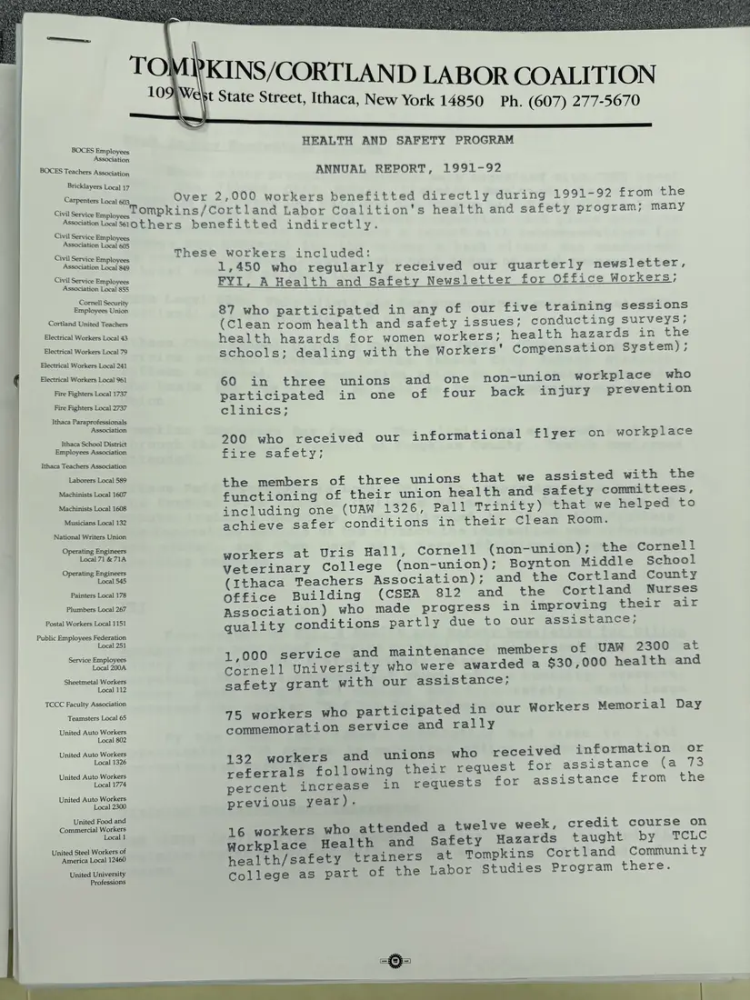
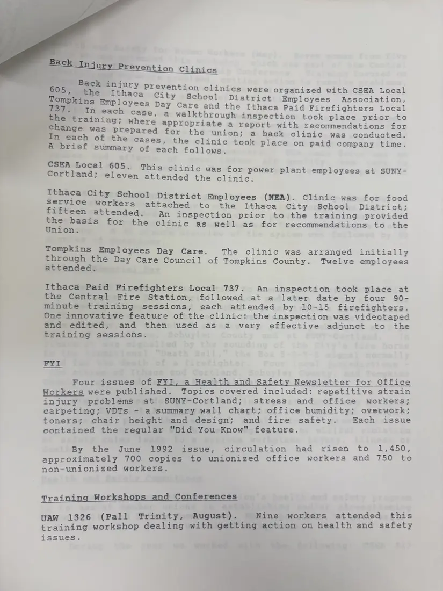
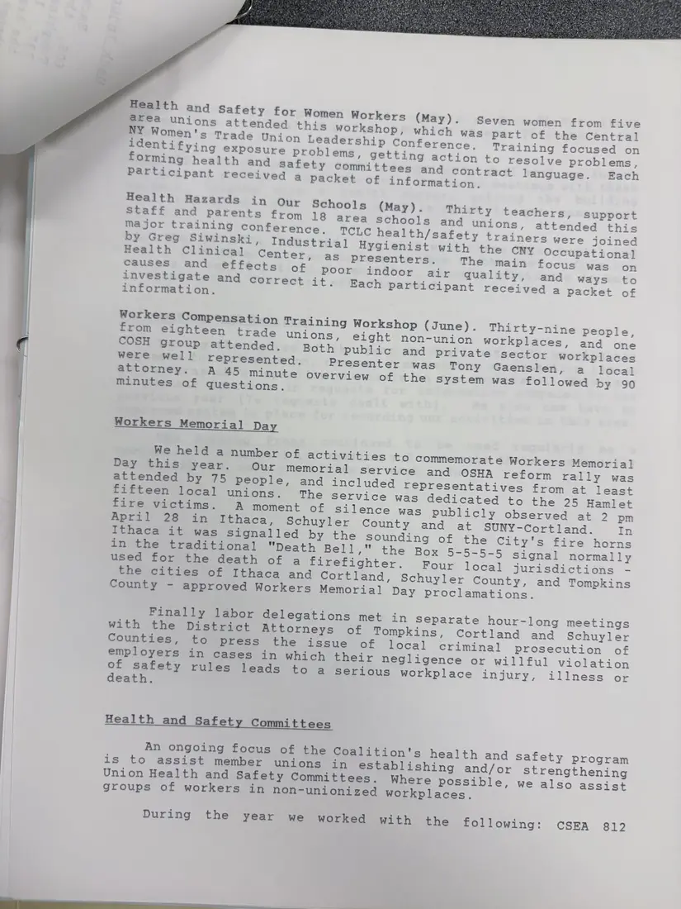
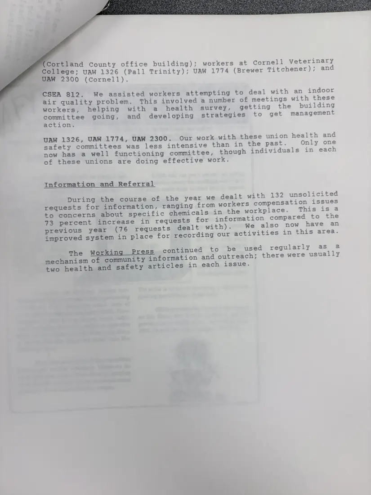

Report, 4 pages
Health and Safety Program annual report, 1991–92
[1992]Date inferred
Over 2,000 workers benefited directly from the program in 1991–92, the report says. It covers back injury clinics, the FYI newsletter (1,450 copies by June 1992), training workshops and conferences, Workers Memorial Day, help for union health and safety committees, 132 requests for information, and the health and safety articles that appeared in most issues of The Working Press.
Download or cite this itemPages


(open zoom view)Read the page text (machine-read, mostly readable)
This text was generated automatically from the photograph and has not been corrected. The image is the authoritative record.
BOCES Employees Association BOCES Teachers Association Bricklayers Local 17 Carpenters Local 603, Civil Service Employees Civil Service Employees Association Local 605 Civil Service Employees Association Local 849 Civil Service Employees Association Local 855 Cornell Security Employees Union Cortland United Teachers Electrical Workers Local 43 | Electrical Workers Local 79 Electrical Workers Local 241 Electrical Workers Local 961 Fire Fighters Local 1737 Fire Fighters Local 2737 Ithaca Paraprofessionals | Association Ithaca School District Employees Association ; Ithaca Teachers Association Laborers Local 589 Machinists Local 1607 Machinists Local 1608 Musicians Local 132 National Writers Union Operating Engineers Local 71 & 71A Operating Engineers Local 545 Painters Local 178 Plumbers Local 267 Postal Workers Local 1151 Public Employees Federation Local 251 Service Employees Local 200A Sheetmetal Workers Local 112 TCCC Faculty Association Teamsters Local 65 United Auto Workers Local 802 United Auto Workers Local 1326 United Auto Workers Local 1774 United Auto Workers Local 2300 United Food and Commercial Workers Local 1 ] United Steel Workers of America Local 12460 United University Professions KINS/CORTLAND LABOR COALITION st State Street, Ithaca, New York 14850 Ph. (607) 277-5670 HEALTH AND SAFETY PROGRAM ANNUAL REPORT, 1991-92 . Over 2,000 workers benefitted directly during 1991-92 from the —- ompkins/Cortland Labor Coalition's health and safety program; many ation Lol 51Others benefitted indirectly. These workers included: 1,450 who regularly received our quarterly newsletter, FYI, A Health and Safety Newsletter for Office Workers; 87 who participated in any of our five training sessions (Clean room health and safety issues; conducting surveys; health hazards for women workers; health hazards in the schools; dealing with the Workers’ Compensation System); 60 in three unions and one non-union workplace who participated in one of four back injury prevention clinics; 200 who received our informational flyer on workplace fire safety; the members of three unions that we assisted with the functioning of their union health and safety committees, including one (UAW 1326, Pall Trinity) that we helped to achieve safer conditions in their Clean Room. workers at Uris Hall, Cornell (non-union); the Cornell Veterinary College (non-union); Boynton Middle School (Ithaca Teachers Association); and the Cortland County Office Building (CSEA 812 and the Cortland Nurses Association) who made progress in improving their air quality conditions partly due to our assistance; 1,000 service and maintenance members of UAW 2300 at Cornell University who were awarded a $30,000 health and safety grant with our assistance; 75 workers who participated in our Workers Memorial Day commemoration service and rally 132 workers and unions who received information or referrals following their request for assistance (a 73 percent increase in requests for assistance from the previous year). 16 workers who attended a twelve week, credit course on Workplace Health and Safety Hazards taught by TCLC health/safety trainers at Tompkins Cortland Community College as part of the Labor Studies Program there.


(open zoom view)Read the page text (machine-read, mostly readable)
This text was generated automatically from the photograph and has not been corrected. The image is the authoritative record.
B ing : 605, * Ng ee en tson clinics were organized with CSEA Local Tompkins Employee ity School District Employees Association, See ES Try each Tie coe Care and the Ithaca Paid Firefighters Local the training; wh Pesce walkthrough inspection took place prior to change was : ere appropriate a report with recommendations for Prepared for the union; a back clinic was conducted. In each of the case ini S, the clinic took pl i i Aeorief Summary of each follows. a ee CSEA Local 605 This clini : . inic was for power plant empl = Cortland; eleven attended the clinic. : “gn geaitacal ecu District Employees (NEA). Clinic was for food FiSticen tag ee attached to the Ithaca City School District; cae ae ended. An inspection prior to the training provided any for the clinic as well as for recommendations to the Tompkins Employees Day Care. The clinic was arranged initially through the Day Care Council of Tompkins County. Twelve employees attended. Ithaca Paid Firefighters Local 737. An inspection took place at the Central Fire Station, followed at a later date by four 90- minute training sessions, each attended by 10-15 firefighters. One innovative feature of the clinic: the inspection was videotaped and edited, and then used as a very effective adjunct to the training sessions. ¥yve Four issues of FYI, a Health and Safety Newsletter for Office Workers were published. Topics covered included: repetitive strain injury problems at SUNY-Cortland; stress and office workers; carpeting; VDTs - a summary wall chart; office humidity; overwork; toners; chair height and design; and fire safety. Each issue contained the regular "Did You Know" feature. By the June 1992 issue, circulation had risen to 1,450, approximately 700 copies to unionized office workers and 750 to non-unionized workers. Training Workshops and Conferences UAW 1326 (Pall Trinity, August). Nine workers attended this training workshop dealing with getting action on health and safety issues.


(open zoom view)Read the page text (machine-read, mostly readable)
This text was generated automatically from the photograph and has not been corrected. The image is the authoritative record.
: Seven women from five area unions attended this workshop, which was part of the Central NY Women's Trade Union Leadership Conference, Training focused on identifying exposure problems, getting action to resolve problems, forming health and safety committees and contract language. Each Participant received a packet of information. Health Hazards in Our Schools (May). Thirty teachers, support Staff and parents from 18 area schools and unions, attended this major training conference. TCLc health/safety trainers were joined by Greg Siwinski, Industrial Hygienist with the cny Occupational Health Clinica] Center, as presenters. The main focus was on causes and effects of poor indoor air quality, and ways to investigate and correct it. Each Participant received a Packet of information. Workers Compensation Training Workshop (June). Thirty-nine People, from eighteen trade unions, eight non-union workplaces, and one COSH group attended. Both public and private sector workplaces were well represented. Presenter was Tony Gaenslen, a local attorney. A 45 minute overview of the system was followed by 90 minutes of questions. Workers Memorial Da morxers Memorial Day We held a number of activities to commemorate Workers Memorial Day this year. Our memorial service and OSHA reform rally was attended by 75 people, and included representatives from at least fifteen local unions. The service was dedicated to the 25 Hamlet fire victims. aA moment of silence was publicly observed at 2 pm April 28 in Ithaca, Schuyler County and at SUNY-Cortland. In Ithaca it was Signalled by the sounding of the City's fire horns in the traditional "Death Bell," the Box 5-5-5-5 signal normally used for the death of a firefighter. Four local jurisdictions - the cities of Ithaca and Cortland, Schuyler County, and Tompkins County - approved Workers Memorial Day proclamations. Finally labor delegations met in Separate hour-long meetings with the District Attorneys of Tompkins, Cortland and Schuyler Counties, to press the issue of local criminal prosecution of employers in cases in which their negligence or willful violation of safety rules leads to a serious workplace injury, illness or death. Health and Safety Committees An ongoing focus of the Coalition's health and safety program is to assist member unions in establishing and/or strengthening Union Health and Safety Committees. Where possible, we also assist groups of workers in non-unionized workplaces. During the year we worked with the following: cCSEA 812


(open zoom view)Read the page text (machine-read, mostly readable)
This text was generated automatically from the photograph and has not been corrected. The image is the authoritative record.
comineaeiesiteiag Cortland County office building); workers at Cornell Veterinary College; UAW 1326 (Pall Trini : i ; 5304 bekias 1), a rinity); UAW 1774 (Brewer Titchener); and CSEA 812. We assisted workers attempting to deal with an indoor air quality problem. This involved a number of meetings with these workers, helping with a health survey, getting the building Pee going, and developing strategies to get management ction. UAW 1326, UAW 1774, UAW 2300. Our work with these union health and safety committees was less intensive than in the past. Only one now has a well functioning committee, though individuals in each of these unions are doing effective work. Information and Referral During the course of the year we dealt with 132 unsolicited requests for information, ranging from workers compensation issues to concerns about specific chemicals in the workplace. This is a 73 percent increase in requests for information compared to the previous year (76 requests dealt with). We also now have an improved system in place for recording our activities in this area. The Working Press continued to be used regularly as @ mechanism of community information and outreach; there were usually two health and safety articles in each issue.
See something wrong, or recognize a person or event? Send a correction. If you hold rights in this item or think it should not be public, write to the same address.